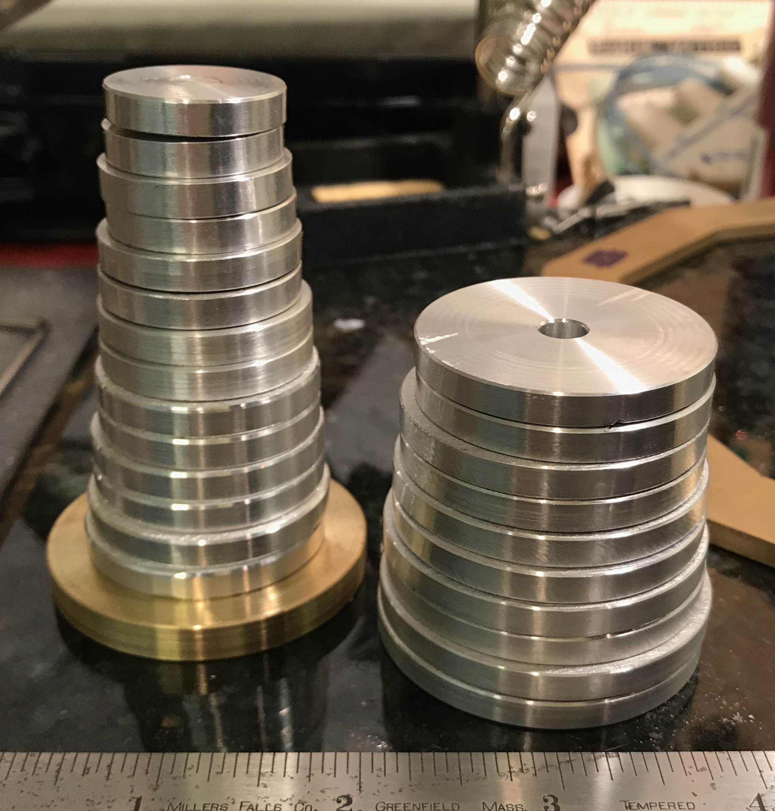
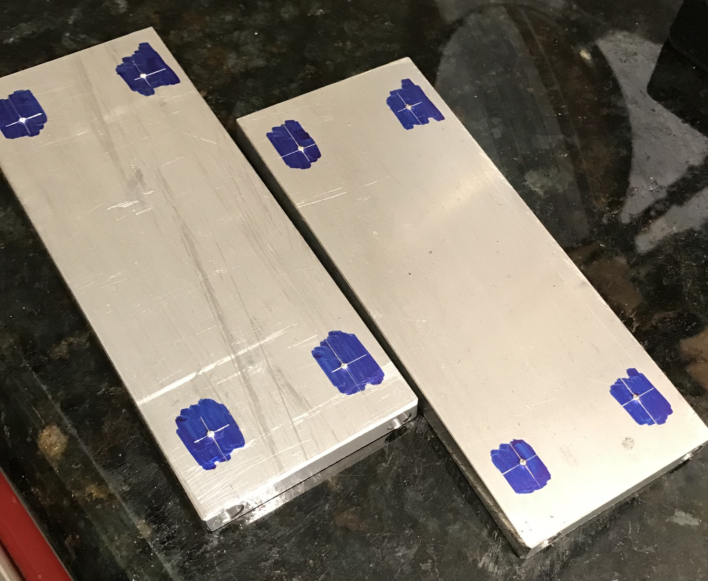

I have considered making a water droplet automaton for some time: ever since viewing this video, Water Experiment 33. It is about time for a cutter to be put to metal.
The automaton will be made of wood and metal. All of the moving parts will be made of brass or aluminum and the frame will be made of wood. After looking at the video I decided on a scale for the project. Twenty-five wheels are used and will be made of 3/16" thick aluminum. The wheels will span 25 X 3/16" = 4.688" and the largest ring will then be 4.688" - 3/16" + 1/8" = 4 5/8" in diameter. All rings will be cut from a 1/16" thick brass disk and will be 1/8" wide. (This leaves 1/16" between rings.) A 1/16" end mill will cut the rings from the disk.
The wheels (two each) will have the following diameters (in): 1.000, 1.083, 1.167, 1.250, 1.333, 1.417, 1.500, 1.583, 1.667, 1.750, 1.833, and 1.917. The center wheel will be about 2" in diameter. The sides of the wheels will be made slightly concave to fit the round ends of the shafts. The hole for the axle will be located about 1/4" from the edge of each wheel and the axle will be glued in place. A handle for the shaft will be similar to the handle for the orrery: (Orrery Handle). The width of the wheels is 3/16". The wheels are all touching faces except the center wheel which has a wheel-width gap between it and the wheels on either side. The total width of the wheels is therefore: 24 * 3/16 + 3 * 3/16 = 5 1/16".
The base will be made of wood and will be 3/4" thick. (The model in the video has two 3/4" thick boards joined face-to-face in the base.) Four columns will support both the middle platform and the top platform. The two top platforms will only be separated by about 1" and serve to keep the moving shafts vertical. Alternatively, the two top platforms could be replaced by a 3/4" thick single platform, which would be thick enough to keep the shafts aligned. These two platforms will be 1/4" thick and have a line of 25 - 1/8" holes drilled through on 3/16" centers (except for the center hole which will be 3/8" from the holes on either side of it). (Brass/bronze inserts may be used as well.) The shafts will be made from 1/8" brass rod and will be about 4.5" long. The rods will be rounded on one end and soldered/glued to the rings on the other end. (Need to design a jig to ensure the rods are perpendicular to the rings when soldering them in place.)

Looking more closely at the youtube video, it seems as if the shafts are significantly beyond (in a front to back sense) the top of the disks at two points in the disk rotation. So it is clear that the disks will not drive shafts that just have a rounded end. Some sort of wider end or "shoe" will be necessary. The shoe will need to be almost as long as the diameter of the cams on which they sit. The simplest possible shoe might be 3/16" rods 1-2" long and cross drilled for the shaft. This requires approximately 37" of 3/16"rod.
The project will begin with the base. It will be 6" in diameter. I have a piece of 3/4" Baltic birch plywood left over from the door to the dodecahedron library and a square 9" piece of 3/4" oak. I plan to make the base in two layers with the top layer smaller in diameter and both layers decorated with some routing around the edges. The top platforms will be made from 1/4" thick wood. They will be held together and drilled for all of the brass rods. Similarly, the bottom and top platforms will all be drilled together for the column positioning. The four columns will be made from dowel rods if possible. Two will be drilled for the rotating shaft. Next the 25 wheels will be cut from the aluminum round stock. They will all need to have a center hole for elaboration of the edges. My plan at this point is to use the rotary table held vertically with a fixture to hold the disks. A 1/4" ball end mill will produce the semi-circular groove in the edges of the aluminum disks. These disks will then be drilled 1/4" centered 1/4" from their edges. The disks will be glued to the 1/4" shaft at the appropriate orientations. The four columns, the shaft with disks, and the base need to be assembled prior to putting the top platforms on.

Two disks were cut with the table saw from 3/4" stock: one 7" and the other 6" in diameter. After building a jig for routing the edges of disks the edges of both disks were slightly decorated using two different router bits. They were then glued face-to-face. Cut out a 6" circle from 3/4" oak and sanded the edge and the faces as well as rounding the corners. The top and base were clamped together on center. The center was found in the top disk using three lines to form a tiny triangle. Two perpendicular lines were drawn through the center and marked at 3/8" at the four ends of the lines. Holes (1/2") were drilled through the top and ~1/2" into the base.
After drilling about 1/4" into the top for the last hole the pulley on the motor shaft flew apart. Luckily both pieces missed me. Thank goodness I was wearing safety glasses during the drilling!! A cover should be made for the pulleys and belts! Of course the remainder of the pulley resists being removed. I think I have a spare somewhere. I have a similarly sized pulley, but the bore diameter is 5/8" instead of 1/2". It also has a keyway. Buy or make a new one??
Purchased one online. After installing the noise that had been so evident when running the drill press was gone! I had thought it was the spindle going bad, when in fact it was just a misalignment between the two pulleys.

The length of the support columns is the sum of the distance between the base and top plus the thickness of the top plus the depth of the hole in the base. The diameter of the largest wheel is 2" and the axle hole is 1/4" from the edge, so the highest/lowest this wheel will be is 1 3/4" above the center of the axle. 2" provides some leeway. Consequently, the distance between the base and the top should be 4". Add 3/4" to this plus the depth of each hole and the columns should be approximately 5 1/4". The top was separated from the base by 4" of scrap. The oak dowel was inserted into a hole, marked and cut to fit. Each column and matching hole were labelled as this can't be assembled until the shaft holding the disks is in place.

A 3" length of 1 1/4" round aluminum was chucked in the four jaw chuck and aligned with the aid of the dial indicator. A steady rest was used for support. The end was faced, center drilled and drilled with a 1/4" drill to a depth of about 1". The outside was lightly sanded and then two 3/16" lengths were parted off. The diameter was reduced to 1.167" and two more disks were parted off. This was repeated for 1.083" and 1.000" with further drilling as needed. All eight disks were cleaned up, the edges chamfered as well as the center hole.
The 1" disks will probably need their center holes plugged prior to drilling for the cross shaft to keep the two holes from merging. Attaching/aligning the disks on the shaft poses some problems. The original plan was to glue them to the shaft. But it is unclear how to hold them in place while the glue dries. The alternative of using a set screw tremendously increases the amount of work to make the disks, but simplifies attachment.
The center disk was made of 1/4" brass. A larger blank was reduced to 2" diameter, chamfered on both sides, and sanded on the faces. The center hole was also chamfered. The two 1" disks were plugged by gluing in 1/4" plugs.
Six more disks were made from 3/16" X 1.5" flat aluminum stock. The aluminum was cut into six squares with a hacksaw. Two were cut a little longer than 1.5". Centers were carefully marked on all squares with a height gauge. The centers were drilled up to 1/4" and the holes were lightly chamfered. The aluminum squares were placed on a mandrel two at a time. The first pair was reduced to 1.332". The disks were chamfered, removed, and sanded. The disks were returned to the mandrel in order to chamfer the "inside" edges. This process was repeated for two 1.417" disks and for two 1.499" disks.
The next set of disks were to be made from a 1 3/4" aluminum rod. A 2" length of this was cut off in the bandsaw (still wandering from straight). Both ends were faced and one end was drilled to 1/4" for a depth of 1 3/8". The hole was chamfered and the diameter was reduced to 1.583" for a length of 0.48". The end was chamfered and a disk was parted off at 0.188". Again the end was chamfered and a second disk was parted off at 0.188". These disks were individually placed on the mandrel and the rough edges were chamfered.
Parting off was extremely difficult and slow. There was significant chatter and on a couple occasions the blade caught in the part yanking the part from the chuck. Part of the problem is the rod has to be held in the reversed jaws with significantly less holding ability. The blade was also yanked out of the holder twice and broke once.
The four disks with diameters 1.833" and 1.916" were made from 2" X 3/16" flat stock similarly to the disks above, though the corners were first removed from the starting squares by hasksawing off the corners. This went quickly. Due to the parting issues, the 1.667" and 1.750" disk pairs were made the same way.
As opposed to the plan above, a cutter was made to cut the round groove in the edges of the disks. The end of a length of tool steel was blued and a half circle was drawn with a scribe around a 3/16" rod end. The tool was then ground to the line with a 7° relief. The top of the tool bit was honed. The tool was placed in a holder and used to cut the groove. There was significant chatter. The three-jaw chuck had to be switched for a four-jaw chuck to provide better holding of the mandrel and keep it from working out of the chuck. In the end it was best to just feed the cutter in slowly and adjust the cross slide as needed. For the larger disks the cutter quit producing chips and gave dust instead. Sharpening was tried, but was ineffective. WD-40 was tried as cutting fluid and this seemed to do the trick. This allowed 6 disks to be cut. The last two disks did not fit over the cross slide, so they were "grooved" with a round file using WD-40. Not great, but acceptable. The two smallest disks had already been plugged and were placed between holding disks with gasket material on them. The cutter was wide enough that it cut into the holding disks, but this actually seemed to help as these disks were the easiest to cut.
The center brass disk was cut last and did utilize the strategy noted at the beginning of this writeup. The rotary table was put on edge. A plate had to be removed, a 3/8" brass tube was used for support, and the table was clamped to the angle plate with C-clamps. A 1/4" round cutter made the groove in multiple 0.010" passes.

Drilling the holes and deciding how to fix them to the shafts took some consideration. Gluing the disks to the shaft was probably not an option as this allows no modification in rotational position. Holding the disks in the proper position while the glue dried would also be challenging. Consequently, cross drilling and tapping for a set screw seemed the most appropriate approach, though tedious, since it needs to be repeated 25 times. A good fit to the shaft was desired, so the holes needed to be reamed 1/4". A 1/4" length of drill rod was selected for the shaft.
The disks were placed in the vise in pairs on parallels. A small slip of paper was used on one side so both were held tightly. The spindle was set 1/4" from the fixed jaw in the back. The vise was centered under the spindle and as the disks were placed in the vise they were adjusted to have the same distance from disk edge to vise edge on both sides. The back edge of the vise was located and the spindle was moved 1/4" in toward the cente of the disks. The hole was then drilled and reamed 1/4".
A fixture was needed to drill the disks for set screws. The angle plate was drilled 1/4" from the top edge on center with a 1/4" drill. Clamping this to the mill table served as a simple, but effective fixture. A 1/4" length of drill rod was inserted through this hole and a disk was then hung on the hole and clamped with machinist's clamps. (After seeing some movement using one clamp two clamps were employed.) The spindle was centered on the rod and moved out about 0.10" to the center of the disks. The disks were three different thicknesses, so this distance was adjusted as needed. Holes were started with a center drill, drilled with a #43 drill, and tapped 4-40. This worked for all of the disks except for the brass center disk. It was too large to fit on the fixture. The brass center disk was just held against the angle plate by the two machinists clamps and aligned by eye. This worked well and all disks are now completed. The 4-40 set screws ordered from Micro Fasteners arrived while we were in Tulsa celebrating Oliver's second birthday. After installing the set screws and placing the wheels in approximately the right orientation on a 1/4" shaft a picture was taken.

After some checking on dimensions it is clear that the current posts are not far enough apart to fit the disks (~4 3/4"). Consequently bearings will need to be made. These bearings will need to have holes 2" above the base. The base is 6 1/2" in diameter. A 2" line across the circle is about 1/4" inside the circle at the line's center. If the bearings are 1/4" thick, then this will leave 5 1/2" of space between the bearings for the disks. Per the calculation above 5 1/16" is needed. Securing a bearing to the bottom disk with two screws will provide sufficient support across the width of the bearing but not in the perpendicular direction. Consequently, a decision was made to replace two of the columns with bottom to top disk bearing supports. These will replace two of the current columns.

A 1/4" thick aluminum disk was available from making the dodecagon frames for the orrery. This was marked out for two 1.5" X 4" rectangles and cut with a hacksaw. The two long edges were squared up on both parts by clamping them with two C-clamps to the angle plate in tandem. One edge was cut flat, the parts were turned over, placed on parallels, and the opposite edge milled flat with the two insert end mill. This left the parts 1.625" wide instead of the planned 1.5", but milling off another 0.125" at 0.010" per pass seemed too much work at 5:00 pm. The ends were milled with a 3/8" end mill to a length of 4.055". All edges were lightly chamfered with a file.
The only #8 screws in the shop are black hex heads, so some nicer #8's will need to be purchased. Set up an aluminum plate clamped to the angle plate, flat to the table and against a stop. Found the back, moved the spindle to the middle of the edge, found the edge and moved the spindle in 3/16". A center drill was used followed by a #15 (0.180) drill for clearance. The plate was then relocated in the same position for the other three holes. This process was repeated on the second plate completing the eight clearance holes for #8 screws.
The four holes to make the radii in the corners were marked out 5/16" from the side and 1/2" from the end. The aluminum was held on a block of wood clamped to the angle plate with a parallel attached to the end for a stop. The holes were drilled to 13/32" starting with a center drill. One attempt to drill to 1/2" did not prove successful. The holes were deburred on both sides.
The center holes were marked out: 13/16" in from the sides and 2" inches from the bottom. The two sides were held together in the vise and drilled to 1/4". These holes were deburred. The bottom ends and the inside top were marked with a center punch to maintain a common reference. One part was marked for cutting out the sides. It was marked with lines from hole to hole on the long sides 7/16" in from the sides. A hacksaw was used to cut a line into each hole. It was also used to cut to the marked line about a hacksaws width from one saw kerf into a hole. A coping saw was used to cut from the hole to the saw kerf at hacksaw width. The hacksaw was then employed to finish the cut to the opposite hole. This was done with both parts together in the vise: reference sides aligned. The rough cut parts are shown below.

The sides were placed in the vice with a scribed line parallel with the top of the vise. The two insert cutter was used to cut to the line from hole to hole. The parts were then placed in the vise on parallels with this cut side down. Luckily, the short parallels fit within the "feet" of the supports. The top side was then also cut down to the scribed line. While still in the vise the sides were further cut so that each end flowed smoothly into the drilled hole. This left a 3/4" "square" in the center. This was repeated on the other side. The ends were cut to match the holes as well, but with a 3/16" end mill. The following photo shows the result of this trimming.

A support was placed on the rotary table in the mill after centering the mill with the dial indicator. It was placed on a scrap of 1/16" brass sheet and held with a vise clamp and a strap clamp. One side of the center section was turned to a semicircle. The table was rotated about 120°, cutting into the sides at each end of the arc. The part was flipped to do the other side and the whole process was repeated on the other support. It was then necessary to taper the sides to feather into these undercuts.

A line was scribed from the undercut near center to the hole drilled near the support's foot. The support was placed in the vise so the line was parallel with the top of the vise jaws using a ruler. The support side was milled with the two-insert end mill until the ends of the cut feathered into the round cuts. This was repeated seven times to complete the support milling. The flat sides were sanded with 400 grit sandpaper.

A support was centered in the 4-jaw chuck on the South Bend lathe using the tailstock center. The hole was opened to 31/64" and then reamed 0.500". This was repeated on the second support. The holes were lightly deburred. Made two bearings from 1/2" bronze rod. A 1 1/2" piece was held in the chuck and faced. It was lightly chamfered and drilled to 7/64" and to a depth of 3/4" followed by reaming to 0.250". Two bearings were parted off at 5/16" and all edges were lightly chamfered. The bearings were a nice slip fit in the support holes. The bearings were glued into place (Loctite) with about 1/32" overhang on each side.

Four holes needed to be plugged as two supports were replaced by the bearing supports. Plugs were cut on the lathe from a scrap of pine. They were cut slightly long and pressed into the holes with glue. Used the random orbit sander with 80 grit paper to quickly sand the plugs smooth with the mating surfaces.

I decided to use a brass inlay in the top so the drilled holes for the moving posts will have better support than just the wooden top. The insert started from a 3/16" X 1 1/2" X 6 1/8" bar of brass stock. Arcs were marked at both ends 3 1/32" from center. A center circle was marked with 3/8" radius. A center hole was drilled and reamed to 1/4" for eventual use on the rotary table. Lines were marked from where the arcs met the edge of the bar to points on the center circle 1/2" in from the edge. The hacksaw was used to remove most of the material between these lines and the edge of the stock. The insert was held edge up in the vise and the marked line was aligned with the top edge of the vise by ruler. The outbound end was supported with a machinist's jack and a piece of card stock was placed in the vise to make sure the brass was evenly clamped. A 1/4" end mill was used to mill down to the line. This was repeated on all four angled cuts leading to the insert shown below.

The rotary table was used to cut the arcs in the middle and the arcs on the ends of the insert. A 3/16" long 1/4" plug was then cut to fit the hole drilled for the rotary table work. The plug was glued in place with Loctite. A little touch up with a file completed the insert. A little planning indicates that the insert should be attached to the top before drilling the holes for the two aluminum support columns. The columns can then be attached and marked for drilling on the bottom. This will help assure that the rod holes are aligned with the wheels below. Saw a good video online about inlay in wood. A dremel was used as a router to carefully cut the outline and made a perfect pocket. A router base from StewMac was used, so I ordered one.
With the router base in hand a trial cut was made first with a scrap piece of the same wood. The brass part was outlined and the center was drilled with a 3/4" Forstner bit. With the bit set to height the outline was routed. The router was able to cut to the line with a little care. A smaller bit needs to be purchased to make this even better at cutting to the line. After a little practice the brass was clamped to the circular top and adjusted until it seemed to be accurately squared to the two holes for the wood columns. It was clamped in place and outlined. Both the brass insert and the top were marked to indicate the outlined orientation. After removing the brass the top was clamped to the workbench and the router with base was used to remove the bulk of the material. It was then used to cut to the lines. A little chisel work was needed to clean up the lines yielding a tight fit for the brass insert.


The next step is attaching the aluminum supports to the top. After some effort to carefully align and tighten up the disks, the distance between the two supports was measured at 5 5/16". This is 1/8" over theoretical (even including the two bearings). This is due to the disks not always laying completely flat against one another. The other challenge noticed is that the weight is not distributed evenly and some counterweights might be needed. If the total inside width is set at 5 3/8", then the distance between the opposite support holes is 5 5/8" and the holes are on a 2.820" hole circle. The distance between adjacent holes is 1 1/4".

The supports were aligned by eye with the edge of the top and with the brass insert. A transfer punch was used to mark the four holes with clamps on two holes at a time. After enlarging the punch marks with a hammer and punch the holes were drilled with a #43 drill and then tapped (both wood and brass) 4-40. One inch long SHCS were used to attach the top to the aluminum supports. The four holes were barely inside the sides of the brass insert. In fact one actually broke through the side when tapping. But when the brass insert was in place this was not noticeable. Whew! The top needed to be a bit larger for comfort.
The brass insert was removed and a center line was marked along its length. Holes were then marked symmetrically around the center with a compass. The first hole was marked 13/32" from center. The ensuing holes were marked 3/16" farther than the previous hole; 19/32", 25/32", 31/32", … The holes were started with a small center drill, followed by drilling with a #31 drill, and finally reaming with a 1/8" reamer. The insert was sanded to 1500 grit and polished with red rouge on a cloth wheel.

Using a 1/8" drill the holes were extended through the top wood disk with the insert in place and serving as a drill guide. A cutting tool was needed to cut the rings from a flat sheet of brass. To this end a two inch length of hack saw blade was cut off with a Dremel and cutting wheel. This piece of blade had the teeth removed on the grinding wheel and then one side was ground to an angle of about 11°. The sides of this cutting tool were very slightly ground. The tool is about 0.023" thick. Nope, that did not work! The tool was shimmed to fit in the QCTP holder with a 1/32" thick piece of brass. TA scrap piece of 1/16" brass sheet was cut to fit on a 2 1/2" square block of wood and attached with carpet tape. The lathe was run at a low speed. The tool was cutting to some extent, but with a lot of flex even though there was less than 1/4" of tool exposed. As the tool went further into the brass the brass was ripped from the carpet tape. A different approach will need to be devised.
I assume these failures are due to the tool geometry. A boring tool has significant relief just below the cutting point. This is because the curve of the hole being cut will rub against the tool if this is not present. None of the tools used to cut this between ring gap have sufficient relief to avoid the rubbing. And this leads to the chatter and inability to cut properly.
So, if I can't use a thin blade to cut all of the disks from a single piece of brass stock, then I will need to use at least two 5" squares of stock to cut out the rings. They will be cut individually and alternate rings will come from alternate stock. This way I can make them 3/16" wide without worrying about the cutter width. The total width of the drilled holes (center to center) is 4 15/16", so the largest ring needs to be 4 15/16" + 3/16". The outside radii of the required disks are: 2 9/16", 2 3/8", 2 3/16", 2", 1 13/16", 1 5/8", 1 7/16", 1 1/4", 1 1/16", 7/8", 11/16", and 1/2". A cutoff tool or a fairly pointed tool will be used to cut close to the I.D. and then the disk will be bored to the requisite inside diameter. Standard tooling will be used to cut the disk to the outside diameter. The 5 1/4" square plate will be used for the 2 9/16", 2 3/16", 1 13/16", 1 7/16", 1 1/16", and 11/16" rings.
The plate was marked for the inside and outside of the six rings to be cut out. The 5 1/4" plate was attached to a 5" square block of 3/4" plywood with double sided tape. The corners were cut off leaving a rough octagon. It was marked and drilled for three holes to fit the face plate of the Sherline lathe. Three #6 screws with two washers were used to hold the block to the face plate. The headstock riser block was inserted and the cutting tools were mounted on the homemade 1 1/14" mounting block. The center mark was aligned to the center of the cutting tool. A groove was attempted between the outermost and next ring. The first tool tried was the tangential tool. It was too obtuse as were the HSS insert tool and the 30° tool. The cutoff blade was not set up, so I switched to cutting the outside of the outermost ring with the tangential tool. This was done in 0.005" increments, due to the intermittent cutting action.
Almost reached the OD of the outer ring when the plate came loose from the plywood! Time to switch to the rotary table on the mill and use a 1/8" end mill to remove the brass between the rings!
The rotary table was squared up on the table and the center hole was indicated in with the dial indicator (turning the spindle). The brass disk was pressed back down on the carpet tape covered wooden block. A 3/8" hole was drilled through the disk and the block. The block was then attached to the rotary center with a screw and nut. The table was moved out on the y-axis and the outside of the disk was reduced slightly to the required 2 9/16" radius. The table was moved a further 5/16" to place the 1/8" end mill just to the inside of the first ring. A 1/8" hole was drilled and after switching to the end mill it was lowered into the hole in increments of 0.010" followed by rotating the table through a full 360°. The 1/8" gap produced by cutting off the outermost ring was widened 0.065" in 10-15 thou increments. The last 0.005" was climb milled to leave a better finish on the outside of the second ring. The table was moved 0.310" (slightly less then 5/16" making up for the extra taken off of the outside). A 1/8" hole was drilled and the groove was milled to depth and width as before. Below is a picture of the first ring cut loose from the disk and the gap to the second ring finished to width.

The process was repeated producing 5 rings: 5 1/8", 4 3/8", 3 5/8", 2 7/8", and 2 1/8" in diameter. The final ring, 1 3/8", was removed from the block of wood and bored to 1" ID. The second set of rings were cut from a 5" X 5" blank. The center was marked and drilled 1/4" and the rings were marked on the brass with a ruler and scribe. The outside of the first ring was cut in one pass with the 1/8" end mill. The end mill was aligned with the edge of the disk 1/8" from the edge of the blank. The blank was moved slowly into the end mill at full depth and when the end mill was aligned with the outermost mark the rotary table was rotated for 360°. It took about 30 minutes but was quite effective with minimal chatter. The remainder of the rings were made as above with the smallest ring drilled to 3/8" and bored to 5/8". The rings need significant cleanup and sizing to fit well together.
Another project that really needed a DRO.
Almost two years later and the project has risen back to the top of my list. After some careful measuring the five rings that need some work were selected. The goal is to end up with a difference in diameters of about 0.025". The rings were labeled to distinguish those that need inside cuts from those that need outside cuts. A support block was made from a 6" X 6" block of 3/4"oak. A 2" X 2" clamping block was attached to the back on center. Circles were marked out on the face of the oak block to facilitate alignment of the rings for cutting. The first ring was placed in position on pieces of double sided tape.
The clamping block was clamped in the four jaw chuck on the South Bend lathe. The center of the block was marked to make the circles and this mark was used for initial alignment via the tail stock. A dial gauge mounted on a magnetic stand was used to center the ring. The only cutter I had that had sufficient front rake was the thread cutting tool. This was mounted in the lathe so that it pointed into the inside of the ring. Multiple attempts were made to remove the 0.012" from the inside of this ring, before I realized that the ring was moving side to side. The small surface area of tape was not sufficient to hold it in place. Strap clamps need to be added to the workholding jig.
I found a 1/2" X 1/2" X 4" block of aluminum in the scrap. This was long enough to make four strap clamps. Two opposite sides were faced with the 3/4" two-insert cutter as they had been sawed at some point in the past. The same cutter was used to cut four 1/16" deep slots across the last side faced. These slots were then chain drilled on center: three holes with a 7/32" drill (the through drill size for a #10 screw). The holes were milled to produce four slots each about 0.6" long. The bar was then cut into four clamps with the hacksaw. The clamps were deburred and the sawn ends were filed. The two pictures show the clamps being cut apart and after deburring. The clamps are taller than needed, but reducing them to the desired 1/4" would have taken too much time. With luck this won't be needed.


Multiple different locations for three or four clamps will be needed to clamp the five rings to be cut. The locations of the holes not only depend on the size of the ring, but also on whether the ring will be cut on the inside or the outside. Twelve holes were drilled to anchor the clamps with a #21 drill. Four 1" long 10-32 SHCS were selected, so the holes were tapped 10-32. The picture below shows the clamps in place for cutting the largest ring.

The large ring was reduced by 0.015" in 0.005" increments. It fits well outside the next size ring. The tool geometry is not ideal and I think I just got away with it on this ring. For the next ring of smaller diameter I could not adjust the tool so the bottom of the tool would not rub. I will use the 1/4" boring bar from the Sherline. It is really too short and needs to be shimmed with three strips of aluminum. However, it has the correct geometry and should work. It squealed a lot but the ring was cut to fit. The 3/8" left hand cutter was then used for the next three rings reduced from the outside. The pictures below show the rings that were cut and the entire group of rings. (The happy guy is me!)


While thinking about the best way to drill the holes in the rings for attaching the sliding rods, I looked at the drilled holes in the top plate. They were drilled and reamed 1/8". Neither a punch nor 1/8" drill rod fit in the holes. I have some brass rod nominally 1/8" that measures slightly under 0.124". It is a very tight fit. The holes in the wood are just as tight even after reaming. I do not see how to transfer the holes to the rings, but these 1/8" holes won't work as currently configured. Short of redrilling the holes at a larger size, thinner material for the sliding rods is needed.
I don't think a little free play should be a problem, so I will purchase 3/32" rod. The distance from the top of a small cam at its lowest point to the top of the support is 1 3/4". With the 3/4" top the minimum length of the sliding rods is 2 1/2". The shoes at 3/16" thick can be ignored. Any length longer than 2 1/2" is how high the rings will float above the top plate. The video noted above shows the rings about 2" above the top. That aligns with the 4.5" in the plan above. Twenty-five rods are required resulting in 112.5" of brass rod. The length of a shoe needs to be the diameter of the cam on which it sits. The sum of the diameters of the aluminum wheels is 35". The brass cam is 2" in diameter. A minimum of 37" of 3/16" brass round is required for the brass shoes. The metal was ordered on 8/23/20.
I will wait on the brass for the sliding rods before drilling the rings. I want to make sure the 3/32" rods will be sturdy enough to function as the sliding rods. Drilling the holes will probably be done with a three jaw chuck attached to the indexing table. Each time a ring is drilled, a machinist's jack or some other device will be used for support. The plan is to attach the sliding rods to the rings by soldering. A jig will be made to make sure the sliding rods are perpendicular to the ring. It will need to be made from steel. Aluminum will solder to brass if there is no aluminum oxide on the surface.
A 1" square piece of stock was located in the garage. Two 1 1/4" lengths were cut off with the band saw. They were both faced on the cut ends in the South Bend lathe. One of the pieces was offset so the center of the part was 7/32" from a side. The part was center drilled and than drilled through with a 5/16" drill. This puts one edge of the hole 1/8" from the nearest edge. The second part was mistakenly also drilled through with the 5/16" drill. This part was then opened up with a 13/32" drill for 1/2" to receive the screw. (If need be it can be plugged on the far end.) The other part was tapped 3/8-16. The corners were all filed and the holes were chamfered.
A 6" length of threaded rod (3/8-16) was cut off and the ends faced and chamfered in the lathe. Three 3/8-16 nuts were found in the drawers. After measuring, a 3/32" hole was drilled in each block. They were 1/4" from the ends and 3/16" from the bottom. The holes were lightly chamfered. The picture shows the jig assembled.

The jig needs to be set from the holes already drilled in the insert. To do this pins need to be made. Either the holes in the bottom of the jig can be opened to 1/8" or the pins can be reduced on one end to 3/32". The latter tack will be tried first. Two 1" lengths of 1/8" drill rod were cut off with a hacksaw. After facing a pin was held in a collet in the lathe and about 3/4" was reduced to 0.124" with sandpaper. The pin was flipped and the other end was faced and then 1/4" was reduced to 0.094". This fit nicely in the drilled hole in the jig. The other pin was made the same way. The fat ends of the pins were inserted in the widest holes in the insert. The jig was placed on the reduced ends and the lock nut was tightened. The jig was placed on a piece of paper and a 3/32" transfer punch was used to mark the paper through the jig's holes. The marks were measured at 4 15/16". The pins were measured and gave the same length. The picture below shows the pins used in the insert for setting the jig.

The rings were marked for holes. Two rulers were used to mark a line across the halfway point, by setting the scribe ruler halfway from the top and bottom with the second ruler. The distance between holes was then measured and centered as best as possible. Some of the holes will be drilled quite near the edges of the rings.
In hindsight it would have been better to have drilled the holes in the rings first, where the most variation exists. Then the holes could have been readily transfered to the insert.
It might be possible to either punch the spot or center drill it very shallowly. A block from the jig could then be center over the hole with the aid of a center punch. Clamping and then drilling through the block would keep the drill from wandering off center. A custom made finger plate would be ideal.
With the custom finger plate in hand, it was time to test it out. First the rings needed to be cleaned up from the lathe work. Acetone and then mineral spirits were used to remove the carpet tape glue. Files were used to deburr the inside and outside edges of the rings. Two stops were established on the milling table. One consisted of three rulers and a parallel wedged into the back tee slot. The second was another finger plate clamped to the table on the left side. The new custom finger plate was placed against the two stops and clamped in place. The 3/32" drill was centered over the drill insert.
The plate was removed and the largest ring was placed on the plate. The pencil lines were centered with the small dot in the center of the "eyepiece". The ring was clamped in place with the finger clamp. The plate was reinserted against the stops and clamped in place. The hole was carefully drilled. The picture below shows the plate in place after drilling a hole.

The plate was removed from the clamps, the ring was removed and the entire process was repeated an additional 23 times. After each pair of holes had been drilled in a ring, they were deburred and the hole separation was checked with the pins in the brass insert. Some were a little tight, but all could be fit on the pins. Most importantly, the hole locations marked right at the edge of the ring were still accurately drilled without wandering off the edge.

Making pins is next in line. The distance from the axle to the top of the top is 2 3/4". The desired height of the rings above the top is about 1". The rods will all be 4" long. The rods will be flat on one end and threaded 2-56 on the other. In order to clean up the ends, trim the rods to length, reduce one end to 0.086", and thread this end, a collet is needed. The smallest ER-32 collet I have is 1/8". But the ER-32 collets will tighten down as much as 0.039", giving me 0.008" leeway. I will test this hypothesis out before I cut any of the rods.
The 1/8" collet clamps tightly on the 3/32" stock. It should have been a straightforward process to thread one end, move the stock out of the collet by 4" and cut off a part. Unfortunately, opening and closing the collet is a bear. This is mainly because I do not have a 1 1/2" open end wrench or an adjustable wrench that opens more than 1 1/4". So I have to use a pair of adjustable pliers with some aluminum between the jaws. It takes more time to open and close the collet than it does to cut the threads or part off the part. I got seven completed after about two hours of work. I will get back to the rest this afternoon.
One saving grace is that I do not need to reduce the part by 0.008" before cutting the threads. The die seems to work fine on the 3/32" brass stock as long as it is tightly clamped in the collet.
The remaining rods were made (26 total). A hacksaw was used instead of the parting tool saving one open/close of the collet. One extra was made and the rod for the drop of water was cut about an inch longer than the rest. (Just in case. After reviewing the video above it is pretty clear that the water drop rod is the same length.) It is not clear to me how much sanding and polishing needs to be done prior to soldering. Some work along these lines will need to be done after soldering, but it might be easiest to do most of it before soldering.
One item I don't want to forget to take care of is a counterweight for the heavy brass disk. An alternative would be to drill holes in this disk. Many of the aluminum disks are also on the same side of the shaft as the brass disk further overbalancing the shaft. The brass disk will also need to be polished as well as the larger aluminum disks.
Sanded the rings with 600 and 1000 grit paper on both sides. After 1.5 hours I had to stop sanding as my hand began to cramp up. The 25 feet were cut 0.25" less than the wheel diameters with a hacksaw from a 36" length of 3/16" brass rod.
Decided to wait until the feet have been made before the rods are trimmed to the final length. The threaded ends are not identically threaded so some may sit deeper in the feet than others.
The ends of the feet will be cleaned up and rounded prior to drilling for the rods. The radius cutter was set up on the lathe. The third hole from the end was selected. A better choice would have been the second as the fixture got very close to the spinning chuck for the short feet. The tool was set on top of the part and the set screws were tightened. Each of the 25 feet had radii cut on both ends over two hours. About 2 1/2 minutes per radius. The picture below shows the radiused feet.

The feet were each marked at half their length with a dial caliper. The spindle of the mill was aligned with the vertical v-groove. A foot was inserted in the horizontal v-groove and the amount of the foot buried in the v-groove was determined. The spindle was then aligned in the y-direction by moving away from the vertical jaw by 0.094" - 0.019" = 0.075". A marked foot was inserted and the mark aligned by eye with the vertical v-groove. The foot was center drilled, drilled through with a #45 drill, and tapped 2-56 all the way through the foot. The tapping was started with the tap in the spindle, but after a few threads were cut the tapping was finished with the tiny tap wrench. All 25 feet were finished in about 3 hours. The pictures below show the tapping operation and the completed (but for polishing) set of feet.


In order to correctly set the lengths of the rods the length needs to be measured while the rod is attached to the foot. For this purpose the rods were mated to the feet and marked. The feet all have numbers so the rods had lines marked across the rod of an equal number. Half of the feet and their mating rods were also marked with a dot. The important aspect of this length is that all pairs are the same, otherwise the ring held by that pair will be tilted.
While deciding how best to adjust the bar length, I considered how best to counterbalance the heavy brass disk. Drilling holes in the brass disk would be easiest, but it is not clear how much weight needs to be removed. It is also not easy to determine how much weight is needed to add for a counterbalance. The ideal approach is to have an adjustable counterbalance. Two steel disks should serve this purpose. Two because they need to balance each other out as well.
The density of brass is 0.3 lbs/cubic in, while aluminum is 0.1 and steel is 0.28. If I only consider the largest two aluminum disks as currently providing a counterbalance to the brass disk. (i.e. we assume the other aluminum disks cancel each other out.) These aluminum disks are 1.9" in diameter and 3/16" thick. So the weight of these aluminum disks is 0.054 lbs. The brass disk at 2" X 1/4" weighs 0.236 lbs. So 3/4's of the brass disk would need to be removed if drilling.
To further complicate matters the center of the disk relative to the axle needs to be included. The center of the brass disk is 0.75" from the axle. So 3/4's of its moment is 0.133 lb-in. If we use steel disks as counterweights and assume that the steel disk centers are 0.5" from the axle center, then the radius of the steel disks is 0.891". In other words two 1.78" disks are needed to counterbalance 3/4's of the brass disk. If that is too much weight the disks can be rotated so they are no longer opposite the brass disk. (with one disk rotating up and one down) This is a fairly easy and nondestructive experiment to run, if I can find some appropriate steel.
A 1 1/2" steel rod was found in the garage. Two approximately 3/16" disks were cut off with the bandsaw. (A very slow drop rate gave a very straight cut.) The disks were individually chucked in the Sherline 3-jaw chuck with the jaws reversed. They were set on two drills (1/16") to provide enough material above the jaws. The first attempt at facing was with the QCTP and the insert cutter. The chatter was bad, so I switched to the Sherline lathe tool in the standard tool holder. The cuts went without chatter. Each side of both disks was faced in this way. A hole was drilled and reamed 1/4" in the center of each disk. The disks were then placed on a 1/4" mandrel and the outside was cleaned. The edges and center hole were lightly chamfered.
The disks were placed in the milling vise on parallels and held tight with a strip of cardboard. A 1/4" shaft was used to align the spindle with the center hole. The x-axis was then moved 0.500" to drill the hole for the axle. The disks were center drilled, drilled with a C drill, and then reamed 1/4". The hole was deburred. The disks were individually stood upright in the vise. The 1/4" rod was aligned with this new hole and used to find the back of the disk. The y-axis was then adjusted 1/8" plus half the thickness of the disk (0.168"). The disk was then drilled #38 and tapped for the 5-40 set screw. After a little clean-up the counterbalance disks were completed as seen the the following photo.

Half of the disks were removed from the axle and the steel disks were inserted on either side of the brass disk. They extended directly opposite the brass disk. This should be the maximum counterbalance effect. The brass disk is still heavier than the other disks, though not by much. Plugging the still disks might be enough added weight to completely negate the extra weight of the brass disk. A 0.610" brass rod, 1/4" in diameter, was added spanning the two steel disks through their center holes. It was still not enough weight.
The shaft between the steel counterweight disks was used to suspend weight. When the various weights balanced the brass disk, their combined weight was approximated by determining their volume and multiplying by density. (aluminum: 0.098 lb/in3, brass: 0.311 lb/in3, steel: 0.284 lb/in3) This weight was suspended at 1/2" from the axle. The two steel disks were also centered 1/2" from the axle. A little math indicated that if the two steel disks were centered at 0.88" from the axle, they should balance the brass disk.
Half of the disks were removed from the axle and the steel disks were attached to their neighboring aluminum disks with carpet tape. The loose disks were reattached to the axle mirroring the arrangement of the affixed disks. The photo below shows the steel disks attached and the balance between the brass disk and steel disks. Of course now the axle likes to stay in a position where these disks are horizontally arranged. But it does seem easier to rotate the axle. I have not decided how best to permanently attach the steel disks to the aluminum disks.

The gap between the aluminum disks and the brass disk they flank should be 0.188". Since the steel disks are slightly thinner than that, I have been using a card when affixing the steel disks to provide a little extra separation between these disks.
Returned to the rods and feet. They were all measured. Most are right about 1/16" longer than 4". One is 4.000". One is 4.017" and one is 4.118". A stop was used, but provided little value unless a rod needed to be returned to the lathe for more reduction. The stop was the taper removal tool from the mill with a long strap clamp screw as the stop. It was just barely long enough for these rods. Since the rods were measured with the foot on, the stop could not be routinely used. All of the rods were reduced to 4.00" as measured with the foot.

The remaining tasks are: polish the rods, feet and rings, solder the rods to the rings, clean up the soldering, polish the cams and the insert, finish the wood, attach the steel disks with screws, make a handle, make the water drop, and assemble. The water drop was made next. A 1/2" length of brass round was chucked in the lathe and the radius tool was used to put a half sphere on the end. The half ball was parted off at 1/2" after drilling and threading the hole 2-56. A short brass screw (2-56) was made. the half ball was put on the screw and the other half was cut part way when the screw broke off in the ball!! A second half ball was made as before and this time a steel screw was used instead of brass. In addition very light cuts were taken to produce the ball shown in the following photo. A rod was shortened and threaded on the second end to complete the final rod.

A 1 1/4" X 5" piece of 1/16" brass plate was found. The brass was painted with Dykem blue. A handle was laid out on the brass with the help of a French curve draftsman's tool and a 3/8" washer. This is seen in the first photo below. A hacksaw was used to remove most of the material. Most of the remainder was filed to the line with a half-round file. A few places were filed with small files and the entire edge was cleaned up with a small half round file. The resulting handle is shown in the second photo.


I couldn't resist and had to put it together at its current stage. A photo of the partially assembled device is below. A few issues were noticed. The center hole for the water drop rod is 1/8" in the brass insert, but 1/4" in the wood. This needs to be plugged and drilled 1/8" Currently as the cams move this foot wanders all over. A second issue is the frame. When the screws holding the aluminum supports were fully tightened the shaft would no longer turn. Leaving them just tight enough was fine. It is not clear if the cams need deeper grooves for the feet. The feet do jump out at times. The weight of the rings and the alignment they provide may make this a non-issue.

The first task tackled is completing the handle. The mechanism was taken completely apart to get access to the shaft. A square is to be cut on the end to hold the handle firmly. A jig was made to accomplish this accurately. An old puzzle part was made from 1/2" square aluminum bar. The center was marked on the end. The stock was centered in the four-jaw chuck by aligning the marked center with a tailstock center. The end was center drilled and then drilled 1/4" about half-way through. It was only drilled this far due to the center cutout, which might cause significant deflection of the drill. The part was carefully reversed in the chuck and drilled from the other end. The hole was reamed all the way through. The shaft was a tight fit so the hole was opened with an F drill to 0.256". The shaft then fit nicely. After deburring the part was marked for set screw holes, 1/4" from the end and centered. (Used the new adjustable marking tool.) Holes were drilled with a #43 drill and tapped 4-40. The photo below shows the shaft in the jig.

To use the jig the depth of cut needs to be determined. The Circle Calculations tool from above was used to determine the correct depth of cut for squaring the circle. The radius, 1/8", was entered as was the total vee angle, 90°. This gave 0.037" as the depth of cut to make the inscribed square. I had significant problems with the Z-axis adjustments on the mill. The backlash is about 0.020"! I was unable to correct this. I ended up with more of a rectangle than a square. The 1/16" thick brass handle was drilled about 0.15, the smaller dimension of the rectangle. The rectangle was created with a small triangular file and fits well. The end of the shaft was drilled and tapped for a 4-40 button head screw.
A knob was made from a 1 5/8" length of 1/2" bronze rod. One end was faced, center drilled, drilled through with a 0.166" drill, and then countersunk with a 0.228" drill for the head of a 6-32 screw. The part was turned around in the chuck. The headstock was set at 6°. The end was reduced to 0.25" providing a pleasing taper. The small end was chamfered. The knob was parted off at 1.25". The new end was chamfered prior to completing the parting. The holes were deburred and the length of the knob was sanded with 600 and 1500 grit paper. The handle assembly attached to the shaft is shown below.

The 1/16" brass handle was sanded with 600 grit paper followed by the brown crocus paper. This geve it a nice polish. The handle is complete except for further polishing. A 1/4" wooden dowel was glued into the center of the wooden top and left to dry over night.
The rings were sanded again this morning with 1500 grit paper. The rings, rods, feet, and other parts were polished on the cloth wheel with red rouge. The rings were polished on both faces and the outside edge. The rods and feet polished nicely with no sanding. The water drop was polished as were the handle and knob. A photo shows the polished parts. One of each foot size was marked on both the foot and the rod with a Sharpie. With the marks the feet can be removed for soldering.

Soldering day!! The process was straightforward, the implementation was not. The jig was set via the pins and the insert at the correct separation. The jig was held in garage vise. Duct tape was put on a rod and the rod was pushed up through the jig and the ring. It was secured with tape. A small piece of solder was placed on the end of the rod as well as a drop of flux (ZnCl2). The ring, rod and solder was heated with a blow torch until the solder melted. This process was repeated for all 24 rods. In each case the foot was on the rod and was aligned tangent to the ring when fully tightened.
Numerous problems arose during the process. Taping was not easy and eventually the best way was wrapping tape around the rod, inserting the rod, and pressing the free end of the tape onto the end of the jig. On occasion the solder would not melt. It was then necessary to add a second piece of solder. Keeping the end of the rod aligned with the top of the ring was not easy as the tape did not stick well to the steel end of the jig. The process was slow, but all 24 joints were completed in four hours. One joint was loose and had to be re-soldered. Below is a photo of the set of rings with rods attached.

After soldering the ring-rod assemblies were washed with soapy water to get rid of any remaining flux. They were rinsed well and dried. The soldered joints were then sanded with 1000 and 1500 grit sand paper. A file was also used in cases of excess solder.
Decided to polish this morning the soldered rings. Probably not a good choice in retrospect. The ring with the bad solder was no better when I picked it up to polish. The join is still flexible. A second join was also weak. Both were close to the edge. While soldering one of the larger rings it caught on the wheel. The damage can be seen in the following photo. The bent ring was flattened in the vise and seemed to be reasonably back to shape. The two rings with loose rods were re-soldered and the rods were soldered back in place on the bent ring. It was sanded to 2000 grit along with the rest of the rings that had not been polished. (I planned to polish them with the rotary tool.) Upon setting the not quite so bent ring in the next size up, I discovered it no longer fits. It is out of round!!

The larger ring is 4 3/4" ID. The next size smaller ring is 4 5/16" OD. The new ring needs to be 4 3/8" ID (minimum) and 4 11/16" OD (maximum). One attempt was made and failed. On the second attempt a 4 3/4" square of 1/32" brass was cut with a hacksaw. The ring was laid out on this brass using dykem and a compass. The brass plate then had its corners removed with the hacksaw to give a rough octagon. This was taped (double sided tape) to a square of 3/4" oak. A center hole was drilled 3/8" all the way through the brass and wood.
The rotary table was aligned with the milling spindle. A recently made brass screw center pip was first aligned with a tailstock center held in a drill chuck. The alignment was further refined with the dial gauge. The first method was within 0.010" and the second method brought this down to less than 0.001". The block was held on the rotary table with the brass screw and two washers. The table was moved off center with the y-axis hand wheel by fifty turns. This set the outside edge of the 5/16" end mill even with the outside edge of the ring. The handwheel was then moved a further six turns out and cutting began. The entire depth was cut with each turn. The handwheel was advanced 0.010" per pass to get back to the original position on the outside edge of the ring. The next size ring fit nicely around this new ring.
The table was advanced back toward center 0.358". This put the spindle 1/16" past the inside of the ring. (0.140" wide ring) A center drill followed by a 1/8" drill produced the starting hole for the end mill. The 1/8" end mill was lowered 0.010" per pass. I made sure the last pass was completely through. When the last pass was about 3/4 complete two clamps were placed on the brass and block to make sure the ring did not come loose. The ring was then freed from the inner circle of brass. The next lower size ring fit comfortably within this new ring. A picture of the new ring is shown below.

The edges of the new ring were deburred and the glue and dykem were removed with acetone. The ring was sanded to 2000 grit and marked for drilling. The drilling jig was used and the holes drilled to match the holes on the insert. The rods from the bent ring were unsoldered and soldered into the new ring using the same procedure as above. The completed ring with rods is shown below.

The new ring was sanded, 1000 to 2000 grit. It and the other rings that were not polished on the buffing wheel were buffed with a 1" felt disk attached to the Dremel. Red rouge was used. These rings are definitely not as shiny as the others. The rings and all of the other buffed parts were neutralized with a baking soda solution. The parts were then rinsed and washed with soapy water. Finally, the parts were wiped with isopropyl alcohol. Everything except the feet were painted with Protecta-clear. The next photo shows the painted parts. A second coat was painted on an hour later before I grilled the salmon.

The feet were strung on a thread. The thread was tied to supports with holes in their ends. The supports were clamped to the work table. The feet were then painted. The water drop was screwed onto its shaft and the shaft clamped between two pieces of wood. All were painted with two coats of the P-C varnish. The photo shows the painted feet.

Sanded the base, top, and legs with 100 and 150 grit paper. These wooden parts were stained with Sedona Red stain. It is redder than I remember. I may put a coat of brown stain over the red. I will decide after they have dried in six hours. Went for the second color, a dark walnut. This toned the red down nicely. This first coat of polyurethane was put on this morning with a paint brush.
Argghh! While removing the feet from the string. One dropped to the floor and rolled under the router table platform. I attempted to grab it with a bar clamp, but it rolled into the sump. Moved everything out of the way to get to the sump. Did a bit of vacuuming while there. I could not find it in the sump. Even though we have had no rain for over a month there was 3" in the bottom of the sump. Time to make a new one.
A new foot was made per the above process. It is 1.02" long. It was polished, cleaned and rinsed with isopropanol. It was painted with two coats of the P-C varnish. After a few days to let the varnish completely dry assembly was attempted. A number of issues were immediately apparent. The two wooden columns need one end on each stained and varnished. as the top is through holes. The wheels were put on the shaft first and then the top was screwed in place. No attempt was made to properly align the wheels. The central shaft could not be put in place as there is no central hole through the wooden top! The smallest ring was dropped in first. The feet could not be screwed on. Of course the smallest ring has the longest feet! Finally the largest ring also could not be put in place as even with the shortest feet and pulling the shaft away from the support the foot would not turn 360°. The aluminum supports do not have mating holes in the bottom, so are not attached. Two pictures below show the partially assembled water droplet. The rings move reasonably well when turning the handle. A few have a tendency to catch on their neighbor.


A number of things have been completed. The ends of the wooden supports were stained and varnished. The screw holes in the wooden top were opened to 1/8". The aluminum supports were too constrained and this pinched the shaft. The assembly was put together without the rings and cams. The bottoms of the aluminum supports were marked for drilling with a small wood screw. The holes were drilled through with a 1/8" drill bit. The bottoms were opened to 3/8" with a Forstner for about 1". The screws were then held in place with nuts. When the assembly was put back together the shaft rotated freely. Too much tightening of the screws holding the aluminum supports in place leads to pinching the shaft.
The entire device was put together. First the aluminum supports were attached to the wooden base with the wooden posts in place. The shaft was slid most of the way through and the cams were put on. The shaft was then slid the rest of the way into the far support. The cams were adjusted to their proper positions and the set screws were tightened. The ball and rings were put through the top and the feet were screwed in place. One of the larger rings' shaft was stripped. A tiny piece of napkin was sufficient to hold the food tight. The top was then screwed to the aluminum supports.
The short movie above shows the smooth action and some of the remaining challenges. The smallest ring when it reaches the top of its travel does not drop back down. Some of the rings catch on each other limiting travel. This latter issue is probably because there is too much play in the shafts as the constraining holes are 1/8" in diameter. Not seen in this movie is a tendency for the drop to go crooked and catch on the smallest ring. But it is working and it looks pretty cool.
Since the posts easily get out of alignment and then the rings catch against each other, an intermediate alignment aid needs to be installed. A number of ideas were considered, but I settled on an oval between the rings and the top. This oval will be carved into waves and held 3/8" above the top by small brass posts. A 2 3/4" X 6 1/4" block of oak was prepared. The brass insert was aligned with the block and one hole was marked and drilled through for 4-40 screws (9/16"). The plate was screwed on, aligned and a second hole was marked and drilled. After reattaching the insert with two screws the remaining two holes were marked and drilled. The block was marked at one end to show insert orientation. The insert was attached.
The block of wood with attached insert was clamped to the mill table with two strap clamps. It was held up off the table with a 6" block of 1 1/2" poplar. The front end of the block was aligned with the front edge of the table. The center hole in the insert was aligned with the spindle using a 1/8" split point drill bit. A hole was drilled through the wooden block. The table was moved to the next hole, aligned on both axes and drilled through. This was repeated for all of the holes in the insert. The holes were cleaned up with a chamfer bit.
The waves were carved into the block with a carving gouge. Four waves were marked on the top of the block. The block was clamped in the Sjoberg vise. A #7 gouge was used to carve the wave troughs. The waves and the top of the block were sanded up to 220 grit paper. The photo below shows the wave block at this stage.

The corners were marked with the aid of a French arc drafting template. The block's corners were then sanded to the line on the disk sander. The entire block was sanded again with 220 grit paper. A coat of Kilz primer was painted on the top and sides. Two coats of cobalt blue acrylic paint were painted on. The finish is very dull almost chalky. The block was set on top of the top and the rings were installed. A few rings were tight fits. So the wave block was cut in half, reducing the thickness to 3/8". Masking tape was put around the edge and the table saw was used to cut almost through in two cuts. The remainder was cut by hand. The back was planed and then sanded smooth.
Two rings were still tight. The holes for these legs were opened up to 0.140". Now they move smoothly. It was noted that many of the rings fit better against their neighbors in one of the two possible arrangements. All of the rings were marked with a blue dot. Aligning these blue dots should minimize ring ring contact. A third coat of blue paint was applied to the wave block.
The feet for the wave block were made from a 1 3/4" length of 3/8" brass round. It was chucked in the lathe and faced. It was center drilled, drilled 3/8" deep with a #43 drill, and tapped 4-40. The end was chamfered and the part was sanded with 400-, 600-, and 1500-grit paper. The part was parted off and the new end chamfered when the parting was about half complete. The hole in the new side was deburred and the tap was run through again to complete the threading. This was repeated for the remaining three parts. The photo below shows the four completed supports for the wave block.

The wave block was painted blue a third time as there were some scrapes from the various manipulations. It was then given two coats of satin polyurethane varnish. It is pictured below.

After putting it together and taking it apart and putting it back together, I decided that the original brass insert needs its holes opened up. The screws coming from above the wave block and the screws coming from below the supports will both end in the wave block feet.